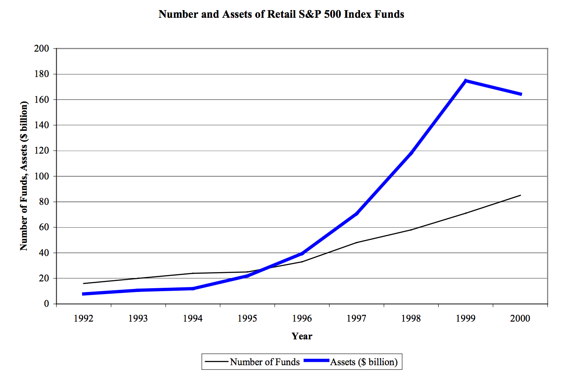
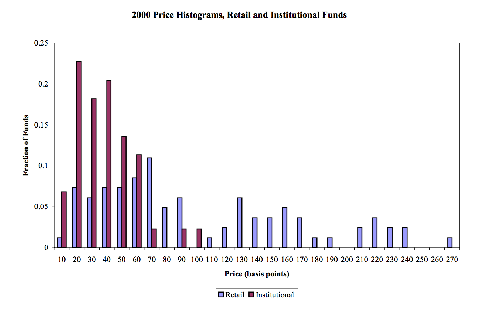

Index Innovation

FinTech
This interview by Barry Ritholtz of Jack Bogle is great. Bogle is the inventor of index funds and the former head of Vanguard, the largest mutual fund in the world. He covers how he was initially fired from Wellington and then engineered a way to seize governance back. In his role as chairman he proposed to incorporate a new entity to handle administrative and governance issues of Wellington. As far as swashbuckling C-suite drama, it’s pretty good, if you’re into that sort of thing.
This interview, however, is more than just entertaining, it has some key lessons about innovation and strategy in business and finance. The great success and eureka moment behind index funds came about as a lucky accident. After Bogle was fired from Wellington and began Vanguard, he convinced the asset managers at Wellington that Vanguard should be allowed to manage passive investments. They were reluctant at first, but because passive management isn’t really management at all, and probably because the fees are so low, they relinquished.

Above you can see the price of funds in terms of their expense ratios. The insight of indexing is that there is one effect that matters so much more than any other that it swamps all other effects. This effect is price. Keeping costs low, by avoiding fees and taxes, is the single strongest investment strategy. Game theoriests would call this a strong form dominant strategy. Interestingly, it may turn out to be weakly dominant if as everybody indexes, the room to arbitrage grows. Bogle does not agree, but we won’t know for sure until most people index.
Accidental Innovation
One mistake we often like to make is to assign meaning and narrative to events that required a good deal of chance. Research and development breakthroughs are more about persistence and trial and error than anybody likes to admit. This explains why business innovators are rarely basic science innovators. Fundemental research is mostly done outside of the private sector, in universities or government labs. Sometimes a plucky biotech or a high tech startup will shoot the moon and create new technologies, but this is the notable exception to the rule. Humans like to idolize people like Jonas Salk or Steve Jobs for single handedly birthing world changing innovation, but the great man theory is as wrong as it is sexist.
The quintessential example of this is the discovery of penicillin. The apocryphal version says it grew on a sandwich left in the lab, but it’s even a little less glamorous than that. It was a petri dish left open accidentally. “Fleming noticed a Petri dish containing Staphylococcus that had been mistakenly left open was contaminated by blue-green mould from an open window, which formed a visible growth.” The key thing was to notice this happy mistake for what it was instead of reflexively throwing out the failed experiment.
Bogle’s index innovation was similar in that the fund managed to raise less than 10% of the attempted 150 million dollars. The underwriters suggested returning the 11 million they had managed to raise, but Bogle, like Fleming, decided to investigate further. Curiosity is a highly underrated trait, maybe the dominant trait in successful people.
The Vanguard Strategy
Even though people didn’t realize Bogle’s brilliance right away, Vanguard came to be the industry giant. How is that possible? My professors are fond of saying that strategy is about choosing what not to do. That is, it is about choosing what your unique advantage is and aligning all your business decisions around that philosophy. (I choose not to say competitive advantage because it is redundant and insulting to economists who coined the term comparative advantage to describe a theory of trade.) So what is the Vanguard strategy?
First, it is a cost advantage, in that they orient their business to be the lowest cost business. They innovated by choosing a highly unpopular model which made no money for active investors who charge fees for their research. This is classic disruption, of the the Clay Christensen variety.
My toy model of companies is that they are a group of stakeholders held together by aligned ambitions. All four groups must share the value created by the company, but also must not take so much that it alienates the other three groups or the company will cease to exist. A company without customers goes bankrupt. A company without employees cannot make anything. A company without management has no leadership and a company without investors cannot afford to operate.

(Pie charts are taboo but useful for zero sum discussions)
Bogle’s brilliance is that Vanguard’s customers are the investors. This mutual setup is not particular to Vanguard. The first insurance company in America, Ben Franklin’s Philadelphia Contributionship for the Insurance of Houses from Loss by Fire, sells insurance to its members who acted as part of a risk pooling consortium. REI is member owned, as is TIAA-CREF. No other investment advisor can compete on cost because all the other investment advisors make money for the employees and management through fees. Once you have aligned your incentive structure this way, you have decided what kind of investment manager you are, what kind of pricing you will offer and how you will have to market your offerings.
Stakeholder Equilibria
These organizations share the benefits among the four business stakeholders less evenly because by combining investors and customers into one category, they have shifted the balance of stakeholder power. Some companies, like Amazon, have managed to provide de facto value akin to a mutual benefit company, but as many have pointed out, that tenuous arrangement is often predicated upon a hero CEO like Bezos with an ideology that may disintegrate after their tenure. Companies that operate like this may look like the chart below.

Of course, business is not a zero sum game, and plenty of companies divide the pie in other ways. Healthcare, law and finance tend to reward their employees well. As the joke goes, investment banks are a socialist paradise run for the benefit of the workers. Doctors have historically done quite well, as many hospitals are nonprofit and don’t have an investor class, but lately management (i.e. administration) has been gobbling up a larger share. Law firms are structured as partnerships so the investors and managers are the same stakeholders which also allows a bit more value to go to the employees. You may have noticed, regulation often plays a large role in industries that reward employees and management highly. Rarely, if ever do customers have much leverage beyond voting with their dollars and the rise of investor activism tells you what the state of investor power is.
Whither FinTech
Financial innovation so often takes a ridiculous cast. The insanity of the Capital Asset Pricing Model, Black-Scholes, Bitcoin, blockchain, securitization, derivatives, synthetic products and the list goes on, are all post-modern absurdities. Where is the real innovation? These relatively benign and often fairly simple concepts take on a life of their own and are sold as snake oil ailments to investors suffering from the disease of greed.
Innovation is often as much about social change and institutional values as about any algorithm or new product. Put me in the luddite, anti-techno-utopian crowd if you must, but I firmly believe that most difficult problems cannot be solved by technology alone. Human problems need human solutions and until finance is willing to take a hard look at who benefits, we will see little if any FinTech innovation.